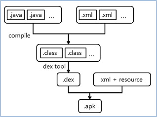
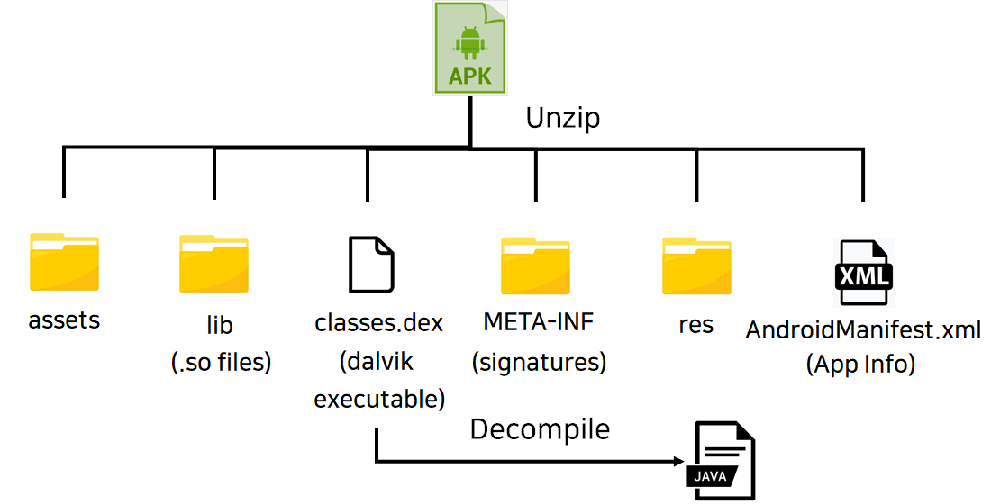

이번 주차에는 Kotlin 에 이어서
APK 구조와 Android 컴포넌트에 대해서 알아보겠다.
APK
APK(Android Application Package) 는 안드로이드 애플리케이션을 위한 패키지 파일 형식이다.
안드로이드에서 앱을 설치하는 역할을 하며, Zip 형식으로 압축된다.
또한 인증을 위해 서명(Sign) 이 포함되어 있다.
윈도우 운영체제를 예시로 들면,
APK 가 Installer 역할을 한다고 말할 수 있다.
APK 생성 과정

안드로이드 프로젝트가 컴파일되어 바이너리 형태의 *.apk 파일로 패키징된다.
패키징 과정 중 *.class 파일을 가상 머신 달빅(Dalvik) 이 인식할 수 있도록 *.dex 파일로 변환한다.
반대로 *.dex 파일에서 *.class 파일을 추출하면 어플리케이션의 소스 코드를 확인할 수 있다.
APK 구조

assets
애플리케이션 실행에 필요한 자원들이 저장되는 디렉토리이다.
lib
라이브러리와 같은 컴파일된 코드가 포함된 디렉토리이다.
※ 라이브러리 파일 = *.so
classes.dex
개발자가 작성한 소스 코드로
소스 코드에서 생성된 달빅 바이트코드가 포함되어 있다.
META-INF
앞서 APK 에는 인증을 위한 서명이 포함되어 있다고 말했다.
META-INF 디렉토리에 APK 인증 서명과 관련된 정보가 담겨 있다.
res
애플리케이션 실행에 필요한 자원들이 저장되는 디렉토리이다.
AndroidManifest.xml
어플리케이션을 구성하는 컴포넌트 및 패키지명, 버전과 앱의 정보가 저장되는 파일이다.
AndroidManifest.xml 의 주요 컴포넌트는 Android 컴포넌트 파트에서 자세히 설명하겠다.
assets 와 res 의 차이
APK 구조 중 assets 과 res 에 대해서 의문이 생긴다.
둘 다 역할이 같은데 하나의 디렉토리가 아니라 두 개의 디렉토리로 나눠서 사용할까?
답은 들어가는 자원의 용량이다.
assets 디렉토리에 용량이 큰 파일이,
res 디렉토리에 용량이 작은 파일이 저장된다.
표로 다시 나타내 보겠다.
| assets | res | |
| 용량 | 아이콘 같이 작은 파일 | 동영상 같이 큰 파일 |
| 컴파일 | O | 원본 상태로 저장 |
| 사용 빈도 | 자주 | 가끔 |
Android 컴포넌트
안드로이드 애플리케이션은 필수적인 기본 구성 요소 4개가 존재한다.
이를 안드로이드 4대 컴포넌트라고 부른다.
각 구성 요소는 시스템이나 사용자가 앱에 들어갈 수 있는 진입점이 된다.
구성 요소는 다음과 같다.
Activity
Activity 는 사용자 인터페이스(UI)를 포함한 단일 화면을 말한다.
예를 들어 Gmail 같은 애플리케이션을 생각해보자.
목록을 표시하는 화면, 이메일을 작성하는 화면 등
각각의 화면이 Activity 라는 것이다.
이런 Activity 는 시스템과 애플리케이션의 주요 상호작용을 돕는 역할을 한다.
Service
Service 는 먼저 말한 Activity 와 달리 백그라운드에서 실행되는 컴포넌트이다.
오랜 기간 동안 실행되는 작업을 수행하거나 원격 프로세스를 위한 작업을 수행한다.
사용자가 다른 애플리케이션에 있는 동안 백그라운드에서 음악을 재생하는 것을 예로 들 수 있다.
Service 는 Activity 처럼 UI 를 주지 않아 사용자와 직접적으로 상호작용하지 않는다.
Broadcast Receiver
Broadcast Receiver 는 안드로이드 시스템이나
다른 애플리케이션으로부터 전송되는 브로드캐스트 메세지를 수신하는 컴포넌트이다.
배터리 부족 경고와 같은 이벤트를 감지하고 처리하는 일을 한다.
UI 를 표시하지는 않지만 알림을 만들어 사용자에게 알릴 수 있다.
Content Provider
Content Provider 는 파일 시스템, 데이터베이스, 웹 또는 애플리케이션이 접근할 수 있는
기타 영구 저장소 위치에 저장할 수 있는 공유된 애플리케이션 데이터 세트를 관리한다.
Content Provider 가 허용하는 경우, 다른 애플리케이션이 Content Provider를 통해
데이터를 쿼리하거나 수정할 수 있다.
예시로 안드로이드 시스템은 사용자 연락처 정보를 관리하는 Content Provider 를 제공한다.
적절한 권한이 있다면 애플리케이션은 Content Provider 를 쿼리하여 연락처 정보를 읽고 쓸 수 있다.
컴포넌트 총정리
Activity - 애플리케이션을 사용할 때 보이는 UI
Service - 백그라운드 작업을 처리
Broadcast Receiver - 이벤트를 애플리케이션에서 받아 처리
Content Provider - 애플리케이션 간 데이터 공유를 관리
후기
APK 구조를 공부해보니 애플리케이션 정보를 알기 위해서는
AndroidManifest.xml 이 매우 중요하다고 생각한다.
또한 APK 를 분석할 때 JADX 를 사용하고자 하는데
디컴파일을 하면 Kotlin 이 아니라 Java 파일로 변환된다고 한다.
따라서 분석을 위해 Java 에 대해서 기초 지식이 필요하다고 생각한다.